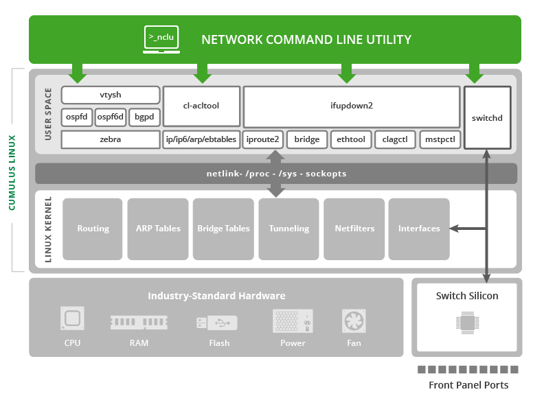

NCLU Network Command Line Utility
The Network Command Line Utility (NCLU) is a command line interface for Cumulus Networks products that simplifies the networking configuration process for all users.
NCLU resides in the Linux user space and provides consistent access to networking commands directly through bash, making configuration and troubleshooting simple and easy; no need to edit files or enter modes and sub-modes. NCLU:
- Embeds help, examples, and automatic command checking with suggestions in case you enter a typo.
- Runs directly from and integrates with bash, while being interoperable with the regular way of accessing underlying configuration files and automation.
- Configures dependent features automatically so that you don’t have to.

The NCLU wrapper utility called net is capable of configuring layer 2 and layer 3 features of the networking stack, installing ACLs and VXLANs, rolling back and deleting snapshots, as well as providing monitoring and troubleshooting functionality for these features. You can configure both the /etc/network/interfaces and /etc/frr/frr.conf files with net, in addition to running show and clear commands related to ifupdown2 and FRRouting.
Install NCLU
If you upgraded Cumulus Linux from a version earlier than 3.2 instead of performing a full binary install, you need to install the nclu package on your switch:
cumulus@switch:~$ sudo -E apt-get update
cumulus@switch:~$ sudo -E apt-get install nclu
cumulus@switch:~$ sudo -E apt-get upgrade
The nclu package installs a new bash completion script and displays the following message:
Setting up nclu (1.0-cl3u3) ...
To enable the newly installed bash completion for nclu in this shell, execute...
source /etc/bash_completion
NCLU Basics
Use the following workflow to stage and commit changes to Cumulus Linux with NCLU:
- Use the
net addandnet delcommands to stage and remove configuration changes. - Use the
net pendingcommand to review staged changes. - Use
net commitandnet abortto commit and delete staged changes.
net commit applies the changes to the relevant configuration files, such as /etc/network/interfaces, then runs necessary follow on commands to enable the configuration, such as ifreload -a.
If two different users try to commit a change at the same time, NCLU displays a warning but implements the change according to the first commit received. The second user will need to abort the commit.
When you have a running configuration, you can review and update the configuration with the following commands:
net show isseries of commands for viewing various parts of the network configuration. For example, usenet show configurationto view the complete network configuration,net show commit historyto view a history of commits using NCLU, andnet show bgpto view BGP status.net clearprovides a way to clearnet showcounters, BGP and OSPF neighbor content, and more.net rollbackprovides a mechanism to revert back to an earlier configuration.net commit confirmrequires you to press _Enter_ to commit changes using NCLU. If you runnet commit confirmbut do not press Enter within 10 seconds, the commit automatically reverts and no changes are made.net commit permanentretains the ac:linknet commit deletedeletes one or more snapshots created when committing changes with NCLU.net del alldeletes all configurations and stops the IEEE 802.1X service.
This command does not remove ac:link
Tab Completion, Verification, and Inline Help
In addition to tab completion and partial keyword command identification, NCLU includes verification checks to ensure correct syntax is used. The examples below show the output for incorrect commands:
cumulus@switch:~$ net add bgp router-id 1.1.1.1/32
ERROR: Command not found
Did you mean one of the following?
net add bgp router-id <ipv4>
This command is looking for an IP address, not an IP/prefixlen
cumulus@switch:~$ net add bgp router-id 1.1.1.1
cumulus@switch:~$ net add int swp10 mtu <TAB>
<552-9216> :
cumulus@switch:~$ net add int swp10 mtu 9300
ERROR: Command not found
Did you mean one of the following?
net add interface <interface> mtu <552-9216>
NCLU has a comprehensive built in help system. In addition to the net man page, you can use ? and help to display available commands:
You can configure multiple interfaces at once:
cumulus@switch:~$ net add int swp7-9,12,15-17,22 mtu 9216
Add ? (Question Mark) Ability to NCLU
While tab completion is enabled by default, you can also configure NCLU to use the ? (question mark character) to look at available commands. To enable this feature for the _cumulus_ user, open the following file:
cumulus@leaf01:~$ sudo nano ~/.inputrc
Uncomment the very last line in the .inputrc file so that the file changes from this:
# Uncomment to use ? as an alternative to
# ?: complete
to this:
# Uncomment to use ? as an alternative to
?: complete
Save the file and reconnect to the switch. The ? (question mark) ability will work on all subsequent sessions on the switch.
cumulus@leaf01:~$ net
abort : abandon changes in the commit buffer
add : add/modify configuration
clear : clear counters, BGP neighbors, etc
commit : apply the commit buffer to the system
del : remove configuration
example : detailed examples of common workflows
help : Show this screen and exit
pending : show changes staged in the commit buffer
rollback : revert to a previous configuration state
show : show command output
When the question mark is typed, NCLU autocompletes and shows all available options, but the question mark does not actually appear on the terminal. This is normal, expected behavior.
Built-In Examples
NCLU has a number of built in examples to guide users through basic configuration setup:
cumulus@switch:~$ net example
acl : access-list
bgp : Border Gateway Protocol
bond : Bond, port-channel, etc
bridge : A layer2 bridge
clag : Multi-Chassis Link Aggregation
dot1x : Configure, Enable, Delete or Show IEEE 802.1X EAPOL
link-settings : Physical link parameters
lnv : Lightweight Network Virtualization
management-vrf : Management VRF
mlag : Multi-Chassis Link Aggregation
ospf : Open Shortest Path First (OSPFv2)
vlan-interfaces : IP interfaces for VLANs
cumulus@switch:~$ net example bridge
Scenario
========
We are configuring switch1 and would like to configure the following
- configure switch1 as an L2 switch for host-11 and host-12
- enable vlans 10-20
- place host-11 in vlan 10
- place host-12 in vlan 20
- create an SVI interface for vlan 10
- create an SVI interface for vlan 20
- assign IP 10.0.0.1/24 to the SVI for vlan 10
- assign IP 20.0.0.1/24 to the SVI for vlan 20
- configure swp3 as a trunk for vlans 10, 11, 12 and 20
swp3
*switch1 --------- switch2
/\
swp1 / \ swp2
/ \
/ \
host-11 host-12
switch1 net commands
====================
- enable vlans 10-20
switch1# net add vlan 10-20
- place host-11 in vlan 10
- place host-12 in vlan 20
switch1# net add int swp1 bridge access 10
switch1# net add int swp2 bridge access 20
- create an SVI interface for vlan 10
- create an SVI interface for vlan 20
- assign IP 10.0.0.1/24 to the SVI for vlan 10
- assign IP 20.0.0.1/24 to the SVI for vlan 20
switch1# net add vlan 10 ip address 10.0.0.1/24
switch1# net add vlan 20 ip address 20.0.0.1/24
- configure swp3 as a trunk for vlans 10, 11, 12 and 20
switch1# net add int swp3 bridge trunk vlans 10-12,20
# Review and commit changes
switch1# net pending
switch1# net commit
Verification
============
switch1# net show interface
switch1# net show bridge macs
Configure User Accounts
You can configure user accounts in Cumulus Linux with read-only or edit permissions for NCLU:
- You create user accounts with read-only permissions for NCLU by adding them to the
netshowgroup. A user in thenetshowgroup can run NCLUnet showcommands, such asnet show interfaceornet show config, and certain general Linux commands, such asls,cdorman, but cannot runnet add,net delornet commitcommands. - You create user accounts with edit permissions for NCLU by adding them to the
neteditgroup. A user in theneteditgroup can run NCLU configuration commands, suchnet add,net delornet commitin addition to NCLUnet showcommands.
The examples below demonstrate how to add a new user account or modify an existing user account called myuser.
To add a new user account with NCLU show permissions:
cumulus@switch:~$ sudo adduser --ingroup netshow myuser
Adding user `myuser' ...
Adding new user `myuser' (1001) with group `netshow' …
To add NCLU show permissions to a user account that already exists:
cumulus@switch:~$ sudo addgroup myuser netshow
Adding user `myuser' to group `netshow' ...
Adding user myuser to group netshow
Done
To add a new user account with NCLU edit permissions:
cumulus@switch:~$ sudo adduser --ingroup netedit myuser
Adding user `myuser' ...
Adding new user `myuser' (1001) with group `netedit' …
To add NCLU edit permissions to a user account that already exists:
cumulus@switch:~$ sudo addgroup myuser netedit
Adding user `myuser' to group `netedit' ...
Adding user myuser to group netedit
Done
You can use the adduser command for local user accounts only. You can use the addgroup command for both local and remote user accounts. For a remote user account, you must use the mapping username, such as tacacs3 or radius_user, not the ac:link
If the user tries to run commands that are not allowed, the following error displays:
myuser@switch:~$ net add hostname host01
ERROR: User username does not have permission to make networking changes.
Edit the netd.conf File
Instead of using the NCLU commands described above, you can manually configure users and groups to be able to run NCLU commands.
Edit the /etc/netd.conf file to add users to the _users_withedit and _users_withshow lines in the file, then save the file.
For example, if you want the user netoperator to be able to run both edit and show commands, add the user to the users_with_edit and users_with_show lines in the /etc/netd.conf file:
cumulus@switch:~$ sudo nano /etc/netd.conf
# Control which users/groups are allowed to run 'add', 'del',
# 'clear', 'net abort', 'net commit' and restart services
# to apply those changes
users_with_edit = root, cumulus, netoperator
groups_with_edit = root, cumulus
# Control which users/groups are allowed to run 'show' commands
users_with_show = root, cumulus, netoperator
groups_with_show = root, cumulus
To configure a new user group to use NCLU, add that group to the groups_with_edit and groups_with_show lines in the file.
Use caution giving edit permissions to groups. For example, don’t give edit permissions to the
Restart the netd Service
Whenever you modify netd.conf, you must restart the netd service for the changes to take effect:
cumulus@switch:~$ sudo systemctl restart netd.service
Back Up the Configuration to a Single File
You can easily back up your NCLU configuration to a file by outputting the results of net show configuration commands to a file, then retrieving the contents of the file using the source command. You can then view the configuration at any time or copy it to other switches and use the source command to apply that configuration to those switches.
For example, to copy the configuration of a leaf switch called leaf01, run the following command:
cumulus@leaf01:~$ net show configuration commands >> leaf01.txt
With the commands all stored in a single file, you can now copy this file to another ToR switch in your network called leaf01 and apply the configuration by running:
cumulus@leaf01:~$ source leaf01.txt
Advanced Configuration
NCLU needs no initial configuration; it is ready to go in Cumulus Linux. However, if you need to modify its configuration, you must manually update the /etc/netd.conf file. You can configure this file to allow different permission levels for users to edit configurations and run show commands. It also contains a blacklist that hides less frequently used terms from the tabbed autocomplete.
| Configuration Variable | Default Setting | Description |
|---|---|---|
| show_linux_command | False | When true, displays the Linux command running in the background. |
| enable_ifupdown2 | True | Enables net wrapping of ifupdown2 commands. |
| enable_frr | True | Enables net wrapping of FRRouting commands. |
| users_with_edit | root, cumulus | Sets the Linux users with root edit privileges. |
| groups_with_edit | root, cumulus | Sets the Linux groups with root edit privileges. |
| users_with_show | root, cumulus | Controls which users are allowed to run show commands. |
| groups_with_show | root, cumulus | Controls which groups are allowed to run show commands. |
| ifupdown_blacklist | address-purge, bond-ad-actor-sys-prio, bond-ad-actor-system, bond-mode, bond-num-grat-arp, bond-num-unsol-na, bond-use-carrier, bond-xmit-hash-policy, bridge-bridgeprio, bridge-fd, bridge-hashel, bridge-hashmax, bridge-hello, bridge-maxage, bridge-maxwait, bridge-mclmc, bridge-mclmi, bridge-mcmi, bridge-mcqi, bridge-mcqpi, bridge-mcqri, bridge-mcrouter, bridge-mcsqc, bridge-mcsqi, bridge-pathcosts, bridge-port-pvids, bridge-port-vids, bridge-portprios, bridge-stp, bridge-waitport, broadcast, hwaddress, link-type, mstpctl-ageing, mstpctl-fdelay, mstpctl-forcevers, mstpctl-hello, mstpctl-maxage, mstpctl-maxhops, mstpctl-portp2p, mstpctl-portpathcost, mstpctl-portrestrrole, mstpctl-portrestrtcn, mstpctl-treeportcost, mstpctl-treeportprio, mstpctl-txholdcount, netmask, preferred-lifetime, scope, vxlan-ageing, vxlan-learning, up, down, bridge-ageing, bridge-gcint, bridge-mcqifaddr, bridge-mcqv4src | Hides corner case command options from tab complete, to simplify and streamline output. |
net provides an environment variable to set where the net output is directed. To only use stdout, set the NCLU_TAB_STDOUT environment variable to true. The value is not case sensitive.